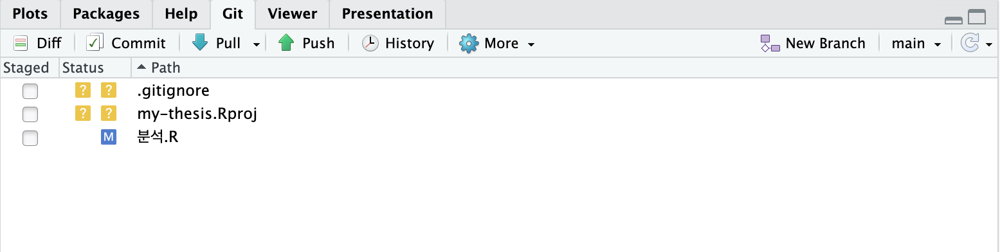
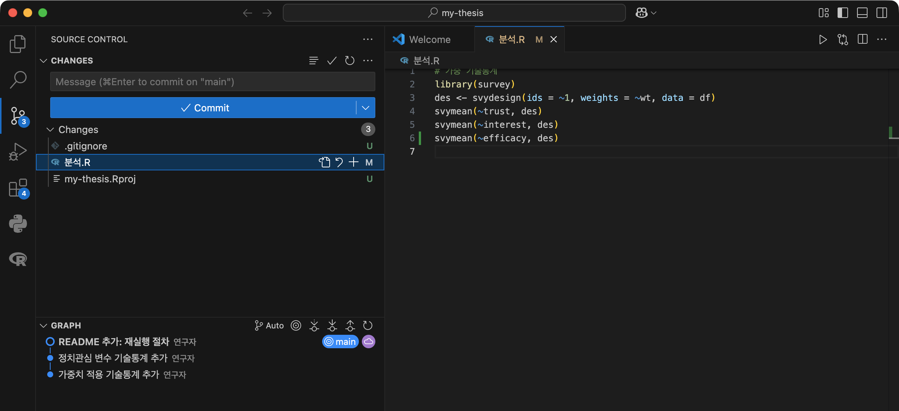
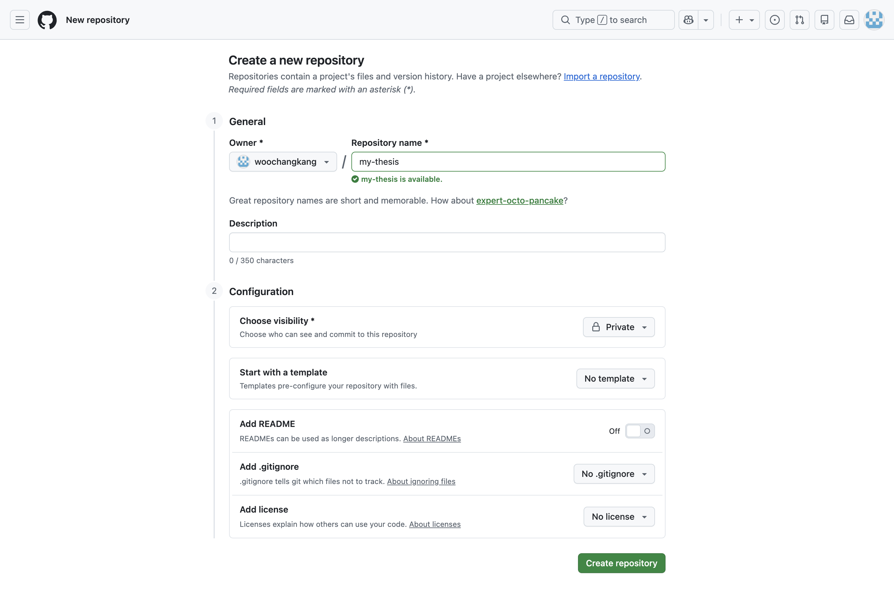
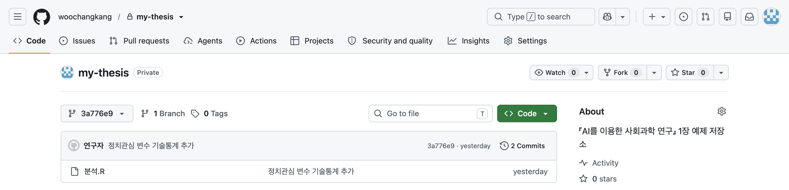
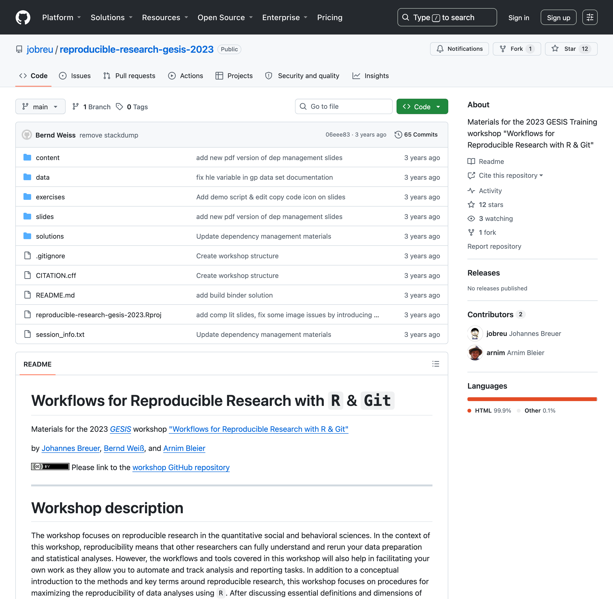

이 책은 AI를 다루는 책인데, 첫 장은 Git으로 시작한다. 여기에는 이유가 있다. 앞으로 여러분은 AI에게 코드를 쓰게 하고, 수만 건의 데이터를 분류하게 하고, 원고 초안을 다듬게 할 것이다. 그 모든 작업의 산출물은 파일이고, 그 파일들이 언제 어떻게 왜 바뀌었는지를 추적할 수 없다면, AI는 생산성의 도구가 아니라 혼돈의 증폭기가 된다. Git은 이 책의 다른 모든 장이 딛고 서는 바닥이다. 3장의 스킬은 Git으로 공유되고, 5장의 검증은 Git 커밋을 롤백 단위로 삼으며, 8장의 투명성 규범은 Git 이력을 증거로 쓴다.
다행히 좋은 소식이 있다. 이 장에서 배워야 할 명령어는 열 개가 되지 않는다. Git은 소프트웨어 개발자용 기능이 방대하지만, 1인 또는 소규모 연구에 필요한 부분은 놀랄 만큼 작다. 우리는 그 작은 부분만 정확히 배운다.
1.1 사회과학의 재현가능성 위기와 Git
1.1.1 두 개의 충격
2015년, 사회과학계는 두 번의 충격을 연달아 겪었다.
첫 번째는 사회과학 학계 전반에 대한 충격이었다. Open Science Collaboration이 심리학 주요 학술지에 실린 연구 100편을 원저자들의 협조하에 그대로 다시 수행했더니, 원논문과 같은 방향의 유의한 결과가 나온 것은 절반에 크게 못 미쳤다. 개별 연구자의 부정이 아니라, 분야 전체의 관행 — 유연한 분석 재량, 선택적 보고, 출판 편향 — 이 문제라는 것이 드러난 사건이었다.
두 번째는 정치학계 내의 충격이었다. 동성혼에 대한 태도가 짧은 대면 대화로 지속적으로 바뀔 수 있다는, Science에 실려 큰 주목을 받은 설문 실험 연구가 있었다(LaCour & Green, 2014). 후속 연구를 준비하던 두 대학원생이 원자료의 통계적 특성에서 이상한 패턴을 발견했고, 추적 끝에 설문 자료 자체가 실재하지 않는다는 것이 밝혀졌다(Broockman, Kalla & Aronow, 2015). 논문은 철회되었다. 이 사건(LaCour 사건)에서 주목할 부분은 부정 그 자체보다 발각의 경로다. 부정을 잡아낸 것은 심사위원도 편집자도 아닌, 공개된 데이터를 재분석한 다른 연구자들이었다. 자료와 절차가 공개되어 있을 때만 작동하는 학문의 자정 장치가 실제로 작동한 드문 순간이었다.
두 사건이 남긴 교훈은 같다. 연구의 신뢰성은 결과의 그럴듯함이 아니라 절차의 추적 가능성에서 나온다. 그리고 이 교훈은 제도가 되었다. 정치학 주요 학술지들은 게재 조건으로 재현 자료(replication materials) 제출을 요구하기 시작했고, AJPS처럼 제3의 기관이 제출된 코드를 실제로 돌려 결과가 재현되는지 검증한 뒤에야 게재를 확정하는 저널도 생겼다. 여러분이 장차 투고할 학술지는 여러분의 코드가 남의 컴퓨터에서 돌아갈 것을 요구한다. 이것은 더 이상 미덕이 아니라 자격 요건이다.
1.1.2 용어 정리: 재현과 반복
논의를 정확히 하기 위해 용어 둘을 구분한다.
재현가능성(reproducibility): 같은 데이터와 같은 코드로 같은 결과가 나오는가. 이것은 연구의 참·거짓 이전에, 연구가 검사 가능한 대상이기 위한 최소 조건이다.
반복가능성(replicability): 새로운 데이터로 같은 설계를 수행했을 때 결과가 유지되는가. 이것은 발견의 일반성에 관한 문제다.
심리학 100편 프로젝트가 시험한 것은 반복가능성이고, LaCour 사건에서 무너진 것은 재현가능성 이전의 문제(자료의 실재)였다. 이 장이 다루는 것은 앞의 것, 재현가능성이다. 반복가능성은 연구 설계의 문제라 도구로 해결할 수 없지만, 재현가능성은 상당 부분 작업 습관의 문제라 도구로 해결할 수 있다. 그 도구의 중심에 버전 관리가 있다.
한 가지를 더 짚자. 재현가능성의 일차 수혜자는 학계가 아니라 여러분 자신이다. 6개월 뒤의 나는 사실상 타인이다. 심사평이 도착해 “표 3의 표본이 왜 2,847명인지” 물어올 때, 답을 아는 것은 그때의 내가 아니라 그때 남겨 둔 기록이다. 재현가능한 연구란 미래의 나에게 보내는 잘 정리된 인수인계 문서다.
이 방식의 문제는 게으름이 아니다. 오히려 부지런함의 산물이다 — 버전을 보존하려는 올바른 본능이, 도구 없이 파일명만으로 구현되어 실패하는 것이다. 파일명 버전 관리는 세 가지 질문에 답하지 못한다. ① 최종2와 진짜최종의 차이가 무엇인가? ② 그 변경을 왜 했는가? ③ 어제까지 되던 분석이 오늘 안 된다면 어느 시점으로 돌아가야 하는가? Git은 정확히 이 세 질문에 답하는 도구다. 차이(diff), 이유(커밋 메시지), 복원(checkout). 여러분의 본능은 옳았다. 도구가 없었을 뿐이다.
1.2 Git의 핵심 개념 — 15분 만에
1.2.1 스냅샷: 저장이 아니라 기록
Git의 핵심 아이디어는 다음과 같다. Git은 프로젝트 폴더 전체의 스냅샷들을 시간순으로 보관하는 사진첩이다. Ctrl+S가 ’지금 상태로 덮어쓰기’라면, 커밋(commit)은 ’지금 상태를 사진 찍어 앨범에 추가하기’다. 덮어쓰기는 과거를 지우지만, 사진첩은 과거를 쌓는다. 그래서 커밋을 아무리 해도 예전 상태는 사라지지 않으며, 언제든 특정 사진 시점의 폴더로 돌아갈 수 있다.
그림 1.1: Git의 정신 모형: 커밋은 저장이 아니라 스냅샷의 축적이다. 갈래(branch)에서의 실험은 본 줄기를 건드리지 않는다.
사진에는 세 가지가 함께 기록된다. 무엇이 바뀌었는지(변경 내용), 누가 언제 찍었는지(작성자·시각), 그리고 왜 찍었는지(커밋 메시지). 이 마지막 항목이 Git을 단순 백업과 구별 짓는다. “결측 처리 방식을 listwise에서 다중대체로 변경”이라는 메시지가 붙은 스냅샷들의 연쇄는, 그 자체로 연구의 의사결정 일지가 된다.
1.2.2 다섯 개의 명령
1인 연구에 필요한 Git의 전부는 다음 다섯 개다. 터미널이 낯설면 그대로 따라 치기만 하면 된다(터미널 자체는 2장에서 차분히 다룬다).
먼저 터미널을 여는 법부터. macOS에서는 Spotlight(⌘ + 스페이스)에서 “터미널”을 검색하거나, 응용 프로그램 → 유틸리티 → 터미널을 실행한다. 윈도우에서는 시작 메뉴에서 “PowerShell”을 검색해 실행해도 되지만, Git을 설치할 때 함께 깔리는 Git Bash를 권한다 — 이 책의 명령을 macOS와 완전히 동일하게 따라 할 수 있다.
준비물은 하나, Git 자체다. 설치 여부는 터미널에 다음을 쳐 보면 바로 안다.
git--version
힌트실행 결과
git version 2.50.1 (Apple Git-155)
이런 식의 버전 번호가 나오면 준비된 것이다(숫자는 달라도 무방하다). “command not found”가 나오면 설치가 필요하다. macOS는 위 명령을 치는 순간 개발자 도구 설치 안내 창이 뜨므로 그대로 따르면 되고, 윈도우는 git-scm.com/downloads에서 설치 파일을 받아 기본 설정 그대로 설치한다(이때 Git Bash가 함께 설치된다). 설치가 꼬였거나 더 자세한 안내가 필요하면 Happy Git and GitHub for the useR의 설치 장(happygitwithr.com/install-git)이 운영체제별로 친절하다.
이제 다섯 명령을 실제 화면과 함께 하나씩 밟아 보자. my-thesis라는 프로젝트 폴더에 다음 네 줄짜리 스크립트가 분석.R라는 이름으로 저장되어 있다고 하자. 폴더에 든 파일은 아직 이것 하나뿐이다(내용은 가중 기술통계의 축소판인데, 지금 중요하지 않다 — 텍스트 파일이면 무엇이든 된다).
이 책에서 회색 블록은 터미널에 입력하는 명령이고, 지금처럼 테두리 박스에 파일 이름이 붙은 것은 편집기로 만들어 저장하는 파일의 내용이다. 둘을 헷갈리면 스크립트를 터미널에 붙여 넣게 되니 구분해 두자.
# 0. 최초 1회: 프로젝트 폴더를 Git 저장소로 만든다cd my-thesisgit init
힌트실행 결과
Initialized empty Git repository in …/my-thesis/.git/
경로 앞부분은 지면에 맞게 줄였다 — 여러분의 화면에는 폴더의 전체 경로가 나온다. 요지는 마지막 부분이다: 이 폴더 안에 .git이라는 숨은 폴더, 곧 사진첩 자체가 생겼다.
# 1. 현재 상태 확인 — 무엇이 바뀌었나 (가장 자주 쓰는 명령)git status
힌트실행 결과
On branch main
No commits yet
Untracked files:
(use "git add <file>..." to include in what will be committed)
분석.R
nothing added to commit but untracked files present (use "git add" to track)
Git이 다음 할 일을 출력 안에서 직접 알려 준다(“use git add …”). 분석.R가 아직 추적되지 않는(untracked) 파일이라는 보고다.
# 2. 사진에 담을 파일 지정 — 고친 파일이 많으면 git add . 로 전부 담는다git add 분석.R
git add는 성공하면 아무것도 출력하지 않는다. 침묵이 정상이다.
# 3. 사진 찍기 (커밋)git commit -m"가중치 적용 기술통계 추가"
힌트실행 결과
[main (root-commit) 3829bf6] 가중치 적용 기술통계 추가
1 file changed, 4 insertions(+)
create mode 100644 분석.R
출력을 한 줄씩 읽어 보자. 첫 줄의 root-commit은 이 저장소의 첫 커밋이라는 표시이고, 3829bf6이 방금 찍힌 사진의 고유 번호(커밋 해시)다. 1 file changed, 4 insertions(+)는 방금 만든 분석.R의 네 줄이 전부 새로 기록되었다는 요약이다 — 새 파일의 모든 줄은 Git의 눈에 ’추가된 줄’이다. 마지막 줄 create mode 100644 분석.R는 이 파일이 사진첩에 처음 등록되었다는 뜻이다(100644는 일반 파일이라는 내부 표시로, 지금은 넘어가도 된다).
이제 파일 끝에 svymean(~interest, des) 한 줄을 추가한 뒤, 무엇이 바뀌었는지 비교해 보자.
바뀐 줄만 + 기호로 표시된다. 출력 머리의 a/분석.R와 b/분석.R가 의아할 수 있다 — 커밋은 한 번뿐인데 왜 a와 b가 있는가? diff는 언제나 두 시점의 비교이기 때문이다. a/는 비교의 기준, 즉 마지막 커밋에 담긴 분석.R이고, b/는 지금 작업 폴더에 있는 분석.R이다(중간의 @@ -2,3 +2,4 @@는 “기준의 2행부터 3줄이, 현재의 2행부터 4줄이 되었다”는 위치 표시다). 요컨대 git diff는 마지막 사진과 지금 폴더의 차이를 보여 주는 명령이다.
이 한 줄을 두 번째 커밋으로 기록한 뒤(git add 분석.R → git commit -m "정치관심 변수 기술통계 추가"), 앨범을 넘겨 보자.
# 5. 앨범 넘겨 보기git log --oneline
힌트실행 결과
8a4a211 정치관심 변수 기술통계 추가
3829bf6 가중치 적용 기술통계 추가
커밋 메시지의 연쇄가 그대로 연구 일지다. (해시 값은 저장소마다 다르게 찍힌다. 같은 내용을 따라 해도 여러분의 화면에는 다른 값이 보이는 것이 정상이다.)
작업의 리듬은 이렇다: 코드를 고친다 → status로 확인한다 → add로 지정한다 → commit으로 기록한다. 하루에 몇 번씩, 의미 있는 작업 단위마다 커밋한다. “오후 작업”이 아니라 “신뢰도 계산 함수 추가”가 한 커밋이다. 단위가 작을수록 앨범은 유용해진다 — 문제가 생겼을 때 돌아갈 지점이 촘촘해지기 때문이다.
커밋 메시지 하나만 규칙을 정하자. “무엇을”이 아니라 “왜”가 필요할 때는 왜를 쓴다.git diff가 무엇이 바뀌었는지는 이미 보여 주므로, 메시지의 부가가치는 이유에 있다. “수정” “업데이트” 같은 메시지는 여섯 달 뒤의 나에게 아무것도 말해 주지 않는다.
1.2.3 GUI를 써도 된다
명령줄이 불편하면 GUI를 써도 전혀 문제없다. 선택지는 크게 둘이다. 하나는 GitHub Desktop(desktop.github.com) — GitHub가 만든 무료 프로그램으로, 위의 다섯 동작이 전부 버튼과 목록으로 제공되어 터미널 없이도 이 장의 흐름을 그대로 따라갈 수 있다. 다른 하나는 여러분이 이미 쓰고 있을 작업 환경 안의 Git이다: RStudio와 VS Code에는 Git 패널이 내장되어 있어 체크박스로 add, 입력창으로 commit을 할 수 있다(두 프로그램이 낯설다면 박스 1-2). 중요한 것은 인터페이스가 아니라 스냅샷 모형의 이해와 커밋의 습관이다. 다만 명령어를 한 번은 손으로 쳐 보기를 권한다 — GUI가 무엇의 단축 버튼인지 알고 쓰는 것과 모르고 쓰는 것은, 문제가 생겼을 때의 대응력이 다르다.
📦 박스 1-2. RStudio와 VS Code가 처음이라면
이 책에서 계속 마주칠 두 작업 환경을 짧게 소개한다. RStudio는 R 전용 통합개발환경(IDE)이다. 스크립트 편집기, 콘솔, 그림 창이 한 화면에 모여 있고, 이 장과 관련해서는 우상단에 Git 패널이 있다 — 계량 분석 수업에서 이미 만났을 가능성이 크다. VS Code는 마이크로소프트의 범용 코드 편집기다. R뿐 아니라 Python, LaTeX, 그리고 2장부터 등장하는 CLI 에이전트까지 한곳에서 다루며, 왼쪽의 소스 제어(Source Control) 패널이 Git을 담당한다. 이 책의 실습은 어느 쪽에서든 따라 할 수 있다 — R 중심의 초반부는 RStudio가, AI 에이전트를 본격적으로 쓰는 장들에서는 VS Code가 자연스럽다.

그림 1.2: RStudio의 Git 패널(2026년 8월 캡처). Staged 열의 체크박스가 git add이고, Commit 버튼이 git commit이다. Status 열의 파란 M은 수정된 파일, 노란 ?는 아직 추적되지 않는 파일 — 1.2절에서 git status가 글자로 알려 주던 그 구분이다. 오른쪽 끝의 main은 지금 서 있는 브랜치 이름이고, Pull·Push는 1.3절에서 배울 원격 저장소와의 주고받기다.

그림 1.3: VS Code의 소스 제어(Source Control) 패널(2026년 8월 캡처). 같은 저장소를 같은 시점에 연 화면이다. 위쪽 입력창에 커밋 메시지를 쓰고 Commit을 누르면 git commit이 실행되고, 목록 오른쪽의 M·U는 RStudio의 M·?와 같은 뜻이다. 아래 GRAPH 영역은 지금까지의 커밋을 사진첩처럼 늘어놓는다. 이름과 배치만 다를 뿐, 두 화면이 부르는 명령은 하나다.
💻 따라 하기: 지금 진행 중인 연구 폴더(없으면 새 폴더에 R 스크립트 하나)를 골라 git init부터 커밋 두 개까지 만들어 보라. 두 번째 커밋 전에 코드 한 줄을 바꾸고, git diff로 변경이 표시되는 것을 확인하라.
1.3 GitHub와 협업
1.3.1 로컬 저장소와 원격 저장소
여기까지의 Git은 내 컴퓨터 안의 일이다. GitHub는 그 사진첩의 사본을 클라우드에 두는 서비스다(같은 역할의 GitLab 등도 있다). 원격 사본이 생기면 세 가지가 가능해진다. ① 백업 — 노트북이 고장 나도 연구는 산다. ② 동기화 — 연구실 컴퓨터와 집 컴퓨터가 같은 이력을 공유한다. ③ 협업 — 공동연구자와 지도교수가 같은 저장소에서 일한다.
클라우드에 둔다는 점에서 Dropbox나 Google Drive를 떠올리기 쉽지만, 역할이 다르다. 동기화 서비스가 복제하는 것은 폴더의 ‘지금 상태’ 하나다. 저장하는 순간 그 최신본이 모든 기기의 유일본이 되고, 변경의 단위도 이유도 남지 않는다(버전 복원 기능이 있긴 하지만 파일 하나 단위이고 보존 기간도 짧다). GitHub에 올라가는 것은 ’지금 상태’가 아니라 1.2절에서 만든 사진첩 전체다 — 무엇이, 왜, 어떤 순서로 바뀌어 왔는지가 커밋 단위로 통째로 옮겨진다. 그래서 Dropbox는 백업은 해 주지만, “지난달의 분석으로 돌아가기”와 “이 수치가 왜 바뀌었는지 추적하기”는 해 주지 못한다. 실무 경고 하나: 둘을 겹쳐 쓰지는 마라. Git 저장소를 Dropbox 동기화 폴더 안에 두면, 동기화가 저장소 내부 파일(.git/)을 어긋나게 만들어 저장소가 깨질 수 있다.
저장소를 만들 때는 공개 범위를 고른다. 공개(public) 저장소는 URL을 아는 누구나 열람할 수 있고, 비공개(private) 저장소는 초대한 사람 — 공동연구자, 지도교수 — 만 접근할 수 있다. 연구 관례는 단순하다. 진행 중인 연구는 비공개로 시작하고, 논문이 게재될 때 replication 패키지를 공개로 전환한다. 비공개에서 공개로는 설정에서 클릭 몇 번이지만, 그 반대 방향은 사실상 없다 — 한 번 공개된 이력은 누군가 이미 복제했을 수 있기 때문이다. 그러니 기본값은 비공개로 두고, 공개는 의식적 결정으로 남겨 두라(공개 시점에 무엇을 점검해야 하는지는 8장에서 다룬다).
flowchart LR
subgraph L["내 컴퓨터 (로컬)"]
A["작업 폴더"] -->|"add + commit"| B["로컬 저장소<br/>(.git)"]
end
subgraph R["GitHub (원격)"]
C["원격 저장소"]
end
B -->|"push"| C
C -->|"pull"| B
D["공동연구자 /<br/>다른 컴퓨터 /<br/>AI 에이전트 세션"] -->|"push"| C
classDef gate fill:#fff,stroke:#9E1B32,stroke-width:2px
classDef ai fill:#fff,stroke:#6B7280,stroke-dasharray:5 4
class D ai
그림 1.4: 저장소는 두 곳에 존재한다. 어느 쪽의 변경이든 push/pull로 합류한다.
새로 필요한 명령은 둘뿐이다.
git push # 내 커밋들을 원격 저장소로 올린다git pull # 원격의 새 커밋들을 내 컴퓨터로 가져온다
남의 저장소(혹은 다른 컴퓨터의 내 저장소)에서 시작할 때는 git clone 주소 — 저장소 전체를, 전체 이력과 함께 복제한다. 이 명령을 기억해 두라. 이 책의 실습 코드 저장소도, 학술지의 replication 패키지도, 3장에서 만들 연구실 공유 스킬도 모두 clone으로 받는다.
1.3.2 첫 원격 저장소 만들기: my-thesis를 GitHub에 올리기
명령을 알았으니 실제로 한 번 올려 보자. 1.2절에서 커밋 두 개를 쌓아 둔 그 my-thesis 폴더가 재료다. 순서는 GitHub에 빈 저장소를 만들고 → 내 폴더에 그 주소를 알려 주고 → push, 세 단계다.
1단계. GitHub에서 빈 저장소를 만든다. 로그인한 뒤 우상단 + 메뉴에서 “New repository”를 고르면 짧은 양식이 나온다. 채울 것은 사실상 넷이다.
Repository name: my-thesis. 로컬 폴더 이름과 같게 두면 헷갈릴 일이 없다.
Description: 한 줄 소개(선택). 목록에서 저장소를 구별하는 데 도움이 된다.
Public / Private: 진행 중인 연구이므로 Private을 고른다(1.3.1의 원칙).
“Add a README file” 등 초기화 항목: 전부 체크하지 않는다. 이것이 초심자가 가장 자주 걸리는 함정이다. 이미 커밋 이력이 있는 로컬 폴더를 올릴 때 원격에도 커밋이 하나 생겨 버리면, 두 이력이 공통 조상 없이 갈라져 첫 push가 거부된다. 지금은 완전히 빈 저장소가 필요하다.
“Create repository”를 누르면 파일 목록 대신 안내 화면이 뜬다. 저장소 주소(https://github.com/<내계정>/my-thesis.git)와 함께 “…or push an existing repository from the command line”이라는 항목이 있고, 바로 아래에 우리가 칠 명령이 그대로 적혀 있다. GitHub가 다음 할 일을 알려 주는 셈이다.

그림 1.5: GitHub의 New repository 양식(2026년 8월 캡처). 위에서 말한 네 항목이 이 한 화면에 있다 — Repository name에 my-thesis, Description은 비워 둔 채, Choose visibility는 Private, 그리고 Add README·Add .gitignore·Add license는 전부 끄거나 “No”로 둔 상태다. 이름 아래 초록색 표시는 그 이름이 아직 비어 있다는 뜻이다.
origin은 “이 원격 저장소를 앞으로 이렇게 부르겠다”는 별명이다(관례적으로 첫 원격에 붙이는 이름이며, 바꿀 수 있지만 그럴 이유는 거의 없다). fetch와 push 두 줄이 나오는 것은 가져올 때와 올릴 때의 주소를 각각 기억한다는 뜻이고, 보통은 같다.
3단계. push. 이제 사진첩을 클라우드로 올린다.
git push -u origin main
힌트실행 결과
To https://github.com/woochangkang/my-thesis.git
* [new branch] main -> main
branch 'main' set up to track 'origin/main'.
* [new branch]는 원격에 main이 새로 생겼다는 뜻이고, 마지막 줄은 앞으로 이 갈래가 원격의 main을 따라다니게 되었다는 보고다. -u가 그 연결을 만드는 옵션이라, 다음부터는 git push만 쳐도 어디로 올릴지 Git이 안다.
4단계. GitHub 화면에서 확인한다. 브라우저의 저장소 페이지를 새로고침하면 안내 화면이 사라지고 방금 올린 내용이 나타난다. 눈여겨볼 것은 넷이다. ① 파일 목록에 분석.R이 있다. ② 파일 이름 옆에 그 파일을 마지막으로 건드린 커밋의 메시지(“정치관심 변수 기술통계 추가”)가 붙어 있다 — GitHub는 파일 목록조차 이력과 함께 보여 준다. ③ 우측 상단의 “2 Commits”를 누르면 커밋 목록이, 각 커밋을 누르면 그 커밋의 diff가 1.2절에서 본 +/− 형태로 나온다. ④ 저장소 이름 옆에 Private 배지가 붙어 있다.

그림 1.6: 첫 push 직후의 my-thesis 저장소 페이지. 눈여겨볼 넷이 한 화면에 있다 — 저장소 이름 옆의 Private 배지, 파일 목록의 분석.R, 그 오른쪽에 붙은 마지막 커밋 메시지, 그리고 2 Commits. (2026년 8월 캡처. 이 저장소에는 그 뒤로 커밋이 더 쌓였기 때문에, 첫 push 시점의 커밋을 지정해 다시 연 화면이다 — 그래서 왼쪽 위 선택기에 브랜치 이름 main 대신 커밋 해시가 보인다.)
이제 리듬이 하나 늘었다. 고친다 → add → commit → push. 두 번째부터의 push는 이런 모습이다(README를 추가해 커밋한 뒤).
git push
힌트실행 결과
Enumerating objects: 4, done.
Counting objects: 100% (4/4), done.
Delta compression using up to 12 threads
Compressing objects: 100% (3/3), done.
Writing objects: 100% (3/3), 414 bytes | 414.00 KiB/s, done.
Total 3 (delta 0), reused 0 (delta 0), pack-reused 0 (from 0)
To https://github.com/woochangkang/my-thesis.git
3a776e9..c7e9f02 main -> main
앞의 여섯 줄은 Git이 변경분을 압축해 보내는 과정의 중계방송이라 읽지 않아도 된다. 중요한 것은 마지막 줄 3a776e9..c7e9f02다 — 원격의 main이 어느 커밋에서 어느 커밋으로 전진했는지를 알려 준다. GitHub 페이지를 새로고침하면 README.md가 목록에 추가되어 있고, README 파일이 있으면 GitHub는 그 내용을 파일 목록 아래에 자동으로 펼쳐 보여 준다. 1.4절에서 README를 “저장소의 입구”라 부르는 이유가 여기에 있다 — 남이 이 저장소를 열었을 때 가장 먼저 읽게 되는 문서이기 때문이다.
📦 박스 1-3. 웹 화면 대신 명령 한 줄: gh
GitHub는 gh라는 공식 명령줄 도구도 제공한다(cli.github.com). 설치하고 gh auth login으로 한 번 인증해 두면, 위의 1~3단계를 폴더 안에서 한 줄로 끝낼 수 있다.
웹 브라우저를 열지 않고, 저장소 생성·원격 등록·첫 push가 한 번에 처리된다. 다만 처음 배울 때는 웹 화면을 거치는 편을 권한다 — 무엇이 어디에 만들어지는지 눈으로 보아 두면, 나중에 문제가 생겼을 때 어디를 봐야 할지 안다. 이 도구는 2장에서 AI 에이전트에게 GitHub 작업을 맡길 때 다시 만난다.
1.3.3 브랜치와 Pull Request: 지도교수 피드백의 구조화
브랜치(branch)는 사진첩의 갈래다. 본 줄기(main)를 건드리지 않고 실험적 갈래를 내어 작업한 뒤, 결과가 좋으면 본 줄기에 합치고(merge) 나쁘면 갈래째 버린다. 혼자 연구할 때 브랜치가 빛나는 장면은 “될지 안 될지 모르는 큰 변경”이다 — 분석 전략을 갈아엎어 볼 때, 잘 되는 현재 상태를 main에 안전하게 두고 git switch -c robustness-check로 갈래에서 마음껏 부수면 된다.
협업에서 브랜치는 Pull Request(PR)와 결합해 검토의 단위가 된다. 시나리오: 대학원생이 분석 갈래에서 작업해 push하고 PR을 연다. PR 화면에는 main과의 차이가 줄 단위로 표시된다. 지도교수는 바뀐 줄에 직접 코멘트를 단다 — “이 표준오차는 클러스터링이 필요하지 않나?” 학생이 수정 커밋을 올리면 PR이 갱신되고, 승인되면 merge된다. 이메일로 코드 파일을 주고받으며 “제가 보낸 게 최신인가요?”를 반복하던 풍경과 비교해 보라. 무엇이 논의되었고 무엇이 반영되었는지가 전부 기록으로 남는다.
“PR을 연다”가 실제로 어떤 동작인지 화면 순서대로 따라가 보자. ① 학생이 갈래에서 git push로 커밋을 올린다. ② 저장소의 GitHub 페이지에 들어가면, 방금 올라온 갈래를 감지한 노란 안내 띠와 “Compare & pull request” 버튼이 나타나 있다. ③ 버튼을 누르면 요청서 작성 화면이 열린다. 위쪽에는 어느 갈래를(compare) 어느 줄기로(base) 합치려는 것인지가 표시되고, 제목과 설명 칸에는 검토자가 무엇을 보면 되는지를 적는다 — 예: “표준오차를 시군구 클러스터로 교체. 표 2·3 수치 갱신, 해석 문단 수정”. ④ “Create pull request”를 누르면 요청이 ‘열린(open)’ 상태가 된다. 이때부터 이 PR 페이지가 검토의 장소다: 줄 단위 코멘트, 수정 커밋의 자동 반영, 승인, 병합까지 모든 것이 이 페이지 하나에서 일어나고 기록된다. 요컨대 PR은 “이 갈래를 본 줄기에 합쳐 주십시오”라는 공개 요청서이고, 병합 버튼을 누르는 권한을 검토자에게 넘기는 장치다.
flowchart LR
A["갈래에서 작업<br/>(학생 또는 AI 에이전트)"] --> B["push + PR 생성"]
B --> C{"검토<br/>줄 단위 코멘트"}
C -->|"수정 요청"| D["수정 커밋"]
D --> C
C -->|"승인"| E["main에 병합"]
classDef gate fill:#fff,stroke:#9E1B32,stroke-width:2px
classDef ai fill:#fff,stroke:#6B7280,stroke-dasharray:5 4
classDef accent fill:#9E1B32,stroke:#9E1B32,color:#fff
class C gate
class A ai
class E accent
그림 1.7: PR 흐름. 검토 게이트를 통과한 변경만 본 줄기에 합쳐진다. 이 구조가 5장 검증 게이트의 원형이다.
이 책의 관점에서 PR의 진짜 의미는 따로 있다. PR은 인간 검토 게이트의 제도화다. 5장에서 우리는 AI의 산출물이 본 줄기에 합쳐지기 전에 검증을 거치게 하는 구조(PEV 루프)를 만드는데, 그 검증 게이트의 가장 자연스러운 구현체가 바로 PR이다. AI 에이전트가 갈래에서 작업하게 하고, 사람이 PR에서 검토·승인하는 흐름 — 지금 배우는 이 협업 관례가 그대로 인간–AI 협업의 골격이 된다.
1.3.4 병합: 갈래는 사라지지 않는다
갈래에서 한 작업이 쓸 만하다고 판정되면 본 줄기로 합친다. 이 합류가 병합(merge)이다. PR 화면의 병합 버튼이 하는 일이 바로 이것이고, 혼자 작업할 때는 명령 둘이면 된다: 목적지(main)로 이동한 뒤, 가져올 갈래를 지정한다.
git switch maingit merge robustness-check
실행하면 Git이 병합 결과를 요약해 준다.
힌트실행 결과
Merge made by the 'ort' strategy.
분석.R | 1 +
1 file changed, 1 insertion(+)
병합이 사진첩에 무엇을 만들었는지는 앨범을 그래프로 넘겨 보면 분명하다.
git log --oneline--graph
힌트실행 결과
* e2ab00e Merge branch 'robustness-check'
|\
| * 8ea797e 설계효과 점검 추가
* | 619a900 그림 스크립트 추가
|/
* 8a4a211 정치관심 변수 기술통계 추가
* 3829bf6 가중치 적용 기술통계 추가
갈래에서 찍은 사진(8ea797e)이 본 줄기의 역사에 그대로 들어와 있고, 두 줄기가 합류한 지점에 병합 커밋(e2ab00e)이 새로 찍혔다. 병합은 “갈래의 것으로 교체”가 아니라 두 줄기 변경의 합집합이다 — main에서 만든 그림 스크립트도, 갈래에서 고친 분석.R도 모두 살아 있다.
초심자가 가장 자주 하는 걱정을 여기서 풀고 가자. 병합하고 나면 갈래의 내용이 사라지는 것 아닌가? 사라지지 않는다. 브랜치는 사진 묶음이 아니라 특정 사진에 붙인 이름표다. 병합을 마친 갈래의 이름표를 떼어내도,
git branch -d robustness-check
힌트실행 결과
Deleted branch robustness-check (was 8ea797e).
지워진 것은 이름표뿐이다. 앨범을 다시 넘겨 보면 안다.
git log --oneline
힌트실행 결과
e2ab00e Merge branch 'robustness-check'
619a900 그림 스크립트 추가
8ea797e 설계효과 점검 추가
8a4a211 정치관심 변수 기술통계 추가
3829bf6 가중치 적용 기술통계 추가
갈래의 내용이 정말 버려지는 경우는 하나뿐이다: 병합하지 않은 갈래를 지우는 것. 이때만 그 갈래의 사진들이 본 줄기에 합류하지 못한 채 폐기된다(그래서 Git도 이 경우 -d를 거부하고, 정말 버리겠다는 뜻의 대문자 -D를 요구한다). 이것은 사고가 아니라 브랜치의 존재 이유다 — 1.3.3의 “나쁘면 갈래째 버린다”가 바로 이 동작이다.
같은 줄을 양쪽에서 고쳤다면: 충돌. 방금의 병합이 매끄러웠던 것은 두 줄기가 서로 다른 파일을 고쳤기 때문이다. 서로 다른 파일이나 다른 줄이면 Git이 알아서 합쳐 주지만, 같은 줄을 두 줄기가 다르게 고쳤다면 Git은 어느 쪽이 옳은지 판단하지 않고 여러분에게 묻는다. 가중치 변수를 main에서는 wt_trim으로, 갈래(alt-weights)에서는 wt_post로 바꾼 상태에서 병합해 보자.
git merge alt-weights
힌트실행 결과
Auto-merging 분석.R
CONFLICT (content): Merge conflict in 분석.R
Automatic merge failed; fix conflicts and then commit the result.
경고문에 놀랄 필요 없다. 파일을 열면 Git이 문제의 지점을 정확히 표시해 두었다.
노트R 스크립트 — 분석.R (충돌 직후, 앞부분)
# 가중 기술통계
library(survey)
<<<<<<< HEAD
des <- svydesign(ids = ~1, weights = ~wt_trim, data = df)
=======
des <- svydesign(ids = ~1, weights = ~wt_post, data = df)
>>>>>>> alt-weights
<<<<<<<와 ======= 사이가 현재 줄기(main)의 버전, =======와 >>>>>>> 사이가 가져오려는 갈래의 버전이다. 해소 절차는 기계적이다. ① 파일을 열어 남길 내용으로 정리하고 세 표식 줄을 지운다 — 한쪽을 고르든 둘을 조합하든, 이것은 Git이 아니라 여러분의 연구적 판단이다. ② git add 분석.R로 정리가 끝났음을 알리고, ③ git commit으로 병합을 마무리한다.
길을 잃었을 때는 언제나처럼 git status가 안내판이다.
git status
힌트실행 결과
On branch main
You have unmerged paths.
(fix conflicts and run "git commit")
(use "git merge --abort" to abort the merge)
Unmerged paths:
(use "git add <file>..." to mark resolution)
both modified: 분석.R
출력 셋째 줄이 알려 주듯, 당황스러우면 git merge --abort로 병합 시도 전 상태로 안전하게 되돌아갈 수도 있다. 충돌은 Git의 고장이 아니라 의견 불일치의 정직한 보고다. 공동연구자와 — 그리고 2장부터는 AI 에이전트와 — 같은 저장소에서 일하게 되면, 이 보고를 읽고 판정하는 일이 여러분의 몫이 된다.
1.3.5 Issues: 연구 노트의 공공화
GitHub 저장소에는 Issues라는 게시판이 붙어 있다. 원래 버그 신고용이지만, 연구에서는 미결 사항 관리 대장으로 쓰면 좋다. “결측 처리 방식 재검토 필요”, “심사평 2번: 강건성 검증 추가” — 각 항목이 번호를 갖고, 논의가 달리고, 해결되면 닫힌다. 커밋 메시지에 #12처럼 번호를 적으면 해당 이슈와 커밋이 자동으로 연결된다. “이 변경이 어떤 문제를 해결한 것인가”의 추적이 공짜로 따라온다.
📦 박스 1-4. 절대 규칙: 민감한 데이터는 올리지 않는다
GitHub에 올라간 것은 공개 저장소라면 전 세계에, 비공개 저장소라도 접근 권한자 전원에게 보인다. 그리고 Git의 본성상 한 번 커밋된 것은 삭제해도 이력에 남는다. 설문 응답 원자료, 인터뷰 전사, 주민 식별 정보, API 키 — 이런 파일은 처음부터 커밋 대상에서 제외해야 한다.
도구는 .gitignore 파일이다. 저장소 최상위에 이 이름의 텍스트 파일을 만들고 제외 패턴을 적는다.
data-raw/ # 원자료 폴더 전체
*.sav # 설문 원본 파일
.env # API 키
.gitignore는 프로젝트를 시작하는 순간, 첫 커밋 이전에 만든다. 데이터를 이미 커밋한 뒤에 지우는 것은 전문가에게도 성가신 작업이며, 공개 저장소였다면 유출은 이미 일어난 것이다. 연습 문제로도 이 순서를 강제할 것이다. 참고로 재현 자료 공개 의무와 개인정보 보호가 충돌하는 상황 — 코드는 공개하되 원자료는 접근 절차를 안내하는 방식 등 — 은 8장에서 정면으로 다룬다.
1.4 연구 프로젝트의 폴더 구조
버전 관리는 무엇을 관리하느냐가 정해져야 힘을 발휘한다. 이 절은 그 ‘무엇’ — 프로젝트의 물리적 조직 — 을 다룬다. 정답이 하나는 아니지만, 다음 구조는 계량 사회과학에서 널리 통용되는 관례의 최대공약수다.
my-thesis/
├── README.md # 프로젝트 안내: 무엇을, 어떻게 재실행하는가
├── .gitignore # 커밋 제외 목록 (박스 1-4)
├── data-raw/ # 원자료: 읽기 전용, git 제외
├── data/ # 가공 데이터: 스크립트가 생성
├── R/ # 분석 스크립트
│ ├── 01_clean.R
│ ├── 02_describe.R
│ └── 03_models.R
├── output/ # 표·그림: 스크립트가 생성
└── docs/ # 원고, 코드북, 메모
flowchart LR
A["data-raw/<br/>원자료<br/>읽기 전용 · git 제외"] -->|"읽기만"| S["R/<br/>01_clean.R<br/>02_describe.R<br/>03_models.R"]
S -->|생성| B["data/<br/>가공 데이터"]
S -->|생성| C["output/<br/>표 · 그림"]
R2["README.md<br/>입구: 재실행 절차"] -.->|안내| S
T["폴더 삭제 검사:<br/>data/와 output/을 지워도<br/>스크립트로 복원되는가?"] -.-> B
T -.-> C
classDef fixed fill:#E5E7EB,stroke:#6B7280
classDef gate fill:#fff,stroke:#9E1B32,stroke-width:2px
class A fixed
class T gate
그림 1.8: 재현가능한 프로젝트의 물질 대사: 원자료는 읽기 전용이고, 모든 가공물은 스크립트의 산출물이다.
구조 자체보다 중요한 것은 구조에 깔린 세 가지 원칙이다.
원칙 1. 원자료는 읽기 전용이다.data-raw/에 들어간 파일은 다시는 손대지 않는다. 엑셀에서 열어 셀 하나를 “잠깐” 고치는 순간, 그 변경은 어디에도 기록되지 않은 채 모든 후속 분석에 스며든다. 원자료의 오류조차 손으로 고치지 않는다 — 고치는 코드를 01_clean.R에 쓴다. 그래야 “무엇을 왜 고쳤는지”가 스크립트에 남는다. 이 원칙은 이 책에서 계속 다시 나타난다. 3장의 survey-eda 스킬 제1원칙(“원자료 파일은 절대 수정하지 않는다”)이 바로 이것이고, 2장에서 AI 에이전트에게 data-raw/를 읽기 전용 권한으로 설정하는 것이 이것의 기술적 강제다.
원칙 2. 모든 가공물은 스크립트의 산출물이다.data/와 output/의 파일은 전부 R/의 스크립트가 생성한 것이어야 한다. 검사법은 단순하다: 두 폴더를 통째로 지우고 스크립트를 번호 순서대로 실행했을 때 모든 것이 되살아나는가? 이 검사를 통과하는 프로젝트가 재현가능한 프로젝트다. 번호 접두사(01_, 02_)는 실행 순서를 폴더 목록 자체가 문서화하게 만드는 값싸고 효과적인 관례다.
원칙 3. README가 입구다. 저장소를 처음 연 사람(6개월 뒤의 나를 포함)이 읽을 첫 문서. 최소 내용: 프로젝트 한 줄 소개, 데이터 출처와 접근 방법, 필요한 패키지, 그리고 재실행 절차(“R/ 스크립트를 번호 순으로 실행”). 여기에 데이터의 변수 사전(codebook)을 docs/에 두면 — 변수명, 라벨, 값의 의미, 결측 코딩 — 3장에서 본 “함정 목록”의 데이터판이 된다. 사실 코드북 없는 데이터가 바로 함정의 온상이다.
💻 따라 하기: 자신의 진행 중인 프로젝트를 이 구조로 재조직해 보라. 아마 가장 어려운 부분은 “이 파일이 원자료였나 가공물이었나”를 판정하는 일일 텐데, 그 어려움 자체가 지금까지의 작업 방식에 대한 진단이다.
1.5 Quarto와 자동화 파이프라인
잠깐 — Git을 배우는 장에서 왜 갑자기 문서 도구가 나오는가? 이 장의 주제는 줄곧 하나였다: 연구를 추적 가능한 기록으로 만드는 것. 커밋으로 분석의 이력을 남겼고(1.2), 원격 저장소로 그 기록을 공유했으며(1.3), 폴더 구조로 기록의 대상을 정돈했다(1.4). 그런데 아직 추적 바깥에 남은 것이 하나 있다. 논문 원고 속의 숫자들이다. 분석 코드는 Git이 추적하지만, 결과를 워드 문서에 손으로 옮겨 적는 순간 코드와 숫자의 연결은 끊긴다 — 표 3의 수치가 어느 커밋의 분석에서 나왔는지 아무도 답할 수 없게 된다. Quarto는 이 마지막 틈새를 닫아 코드→결과→원고 전체를 하나의 추적 가능한 파일로 만들고(1.5.1), GitHub Actions는 커밋할 때마다 그 파일이 남의 컴퓨터에서도 재현되는지 자동으로 검사한다(1.5.2). 요컨대 이 절은 Git과 별개의 도구 소개가 아니라, 커밋 단위의 추적과 검사를 원고에까지 확장하는 마지막 조각이다.
1.5.1 코드와 서술을 한 문서에
전통적 작업 흐름에서 분석과 글은 분리되어 있다. R에서 표를 만들고, 워드에 붙여 넣고, 수치를 본문에 옮겨 적는다. 이 복사–붙여넣기의 틈새가 오류의 서식지다. 분석을 고치면 표 열두 개와 본문 수치 서른 곳을 손으로 갱신해야 하고, 하나쯤은 반드시 빠뜨린다.
Quarto는 이 틈새를 없앤다. .qmd 문서 안에 서술(마크다운)과 코드(R/Python 청크)가 공존하고, 렌더링하면 코드가 실행되어 표·그림·수치가 본문에 박힌 HTML·PDF·워드 문서가 나온다. 데이터가 바뀌면? 다시 렌더링하면 모든 수치가 일괄 갱신된다. 본문 속 숫자도 `r round(coef, 2)` 처럼 인라인 코드로 넣으면 복사–붙여넣기가 원천적으로 사라진다.
노트Quarto 문서 — 설문_예비분석.qmd
---title: "설문 예비분석"format: html---응답자는 총 `r nrow(df)`명이었다. 정치신뢰 척도의신뢰도는 α = `r res$alpha`로 수용 가능한 수준이었다.```{r}knitr::kable(w_desc_cont(df, vars, wt ="wt"))```
낯익은 형식일 것이다 — 3장의 survey-eda 스킬이 생성하는 보고서가 바로 이 Quarto 문서였다. 그 보고서 말미의 ‘분석 로그’ 절이 가능했던 것도, 문서가 자신을 생성한 코드와 한 몸이기 때문이다.
1.5.2 GitHub Actions: 커밋하면 배포된다
마지막 조각은 자동화다. GitHub Actions는 저장소에 특정 사건(예: main에 push)이 일어나면 지정된 작업을 클라우드에서 자동 실행하는 장치다. 대표적 활용이 Quarto 사이트 자동 배포: 분석을 고쳐 커밋하면, GitHub가 알아서 문서를 렌더링해 웹사이트(GitHub Pages)로 게시한다. 연구자는 push만 하고, 공저자와 세상은 항상 최신 결과를 URL로 본다.
설정은 저장소에 워크플로 파일 하나를 두는 것으로 끝난다(전문은 책 저장소 ch01/에; Quarto 공식 문서의 표준 예제를 그대로 쓰면 된다). 여기서 개념만 가져가자: 커밋이 곧 배포 단위가 되는 순간, “내 컴퓨터에서는 되는데”라는 변명이 사라진다. 클라우드의 깨끗한 컴퓨터에서 렌더링이 성공했다는 것 자체가 재현가능성의 상시 검사이기 때문이다. 렌더링이 실패하면 이메일이 온다 — 여러분의 프로젝트에 무료 검사원이 상주하는 셈이다.
백문이 불여일견 — 아래는 곧 해부할 GESIS 워크숍 저장소의 실제 첫 화면이다. 박스 1-5를 읽을 때 이 화면을 곁에 두고 대조해 보라.

그림 1.9: GESIS 워크숍 저장소의 첫 화면(2026년 8월 캡처). 목적별 폴더(content/, data/, exercises/, slides/, solutions/)와 .gitignore, CITATION.cff, session_info.txt가 첫눈에 들어온다 — 박스 1-5에서 항목별로 해부한다.
📦 박스 1-5. 사례 해부: 가르치는 대로 사는 저장소 — GESIS 재현가능 연구 워크숍
이 장의 도구들이 실제로 어떻게 결합되는지 보여 주는 훌륭한 실물이 있다. 독일 GESIS 라이프니츠 사회과학연구소의 워크숍 “Workflows for Reproducible Research with R & Git”(Johannes Breuer, Bernd Weiß, Arnim Bleier)의 공개 저장소다(github.com/jobreu/reproducible-research-gesis-2023, CC-BY 4.0). 계량 사회과학자를 위한 이틀짜리 재현가능성 강좌인데, 이 저장소가 교재로서 특별한 이유는 저장소 자신이 가르치는 내용을 그대로 실천하고 있다는 점이다. 최상위 파일 목록을 읽는 것만으로 이 장의 복습이 된다.
session_info.txt — 자료를 만들 때 사용한 R 버전과 패키지 목록의 기록. “당신 컴퓨터의 환경”까지 재현 대상이라는 다음 단계 주제(의존성 관리)의 예고편이다.
CITATION.cff — 저장소 인용 방법의 명시. 코드와 자료도 인용되는 학술 산출물이라는 선언이다.
그리고 슬라이드 주소(jobreu.github.io/…)를 보라 — 워크숍 슬라이드 자체가 이 절에서 배운 GitHub Pages로 배포되고 있다. 커밋하면 갱신되는 강의 자료다.
이 워크숍이 우리 책과 특히 잘 맞는 지점이 하나 더 있다. 실습 안내문에 이런 경고가 반복해서 나온다: 실제 연구 데이터는 절대 GitHub에 올리지 말 것 — 워크숍 데이터는 합성 자료이지만, 그래도 올리지 않는 습관을 들이라. 박스 1-4에서 세운 규칙이 개인 취향이 아니라 유럽 사회과학 데이터 기관의 공식 교육 내용임을 확인할 수 있다. 아래 1.5.3에서 이 워크숍의 실습을 우리 맥락에 맞게 따라가 본다.
1.5.3 실전 예제: GESIS 워크숍 실습 따라가기
GESIS 워크숍의 Git 실습(Exercise: Git & RStudio)은 이 장에서 배운 사이클 전체를 40분 안에 한 바퀴 돌게 설계되어 있다. 원 실습은 RStudio의 Git 패널을 사용하는데, 여기서는 같은 흐름을 우리 책의 도구 순서에 맞게 재구성한다. GUI로 하고 싶다면 원 실습 문서(저장소의 exercises/ 폴더)를 그대로 따라도 좋다 — 도착점은 같다.
0단계. 재료 준비. 워크숍 저장소를 clone해서 구경하는 것으로 시작한다. 남의 잘 만든 저장소를 열어 보는 것은 공짜 과외다.
받은 것은 최신 파일들만이 아니다. Total 594는 이 저장소의 모든 커밋과 모든 버전의 파일을 통째로 가져왔다는 뜻이다(슬라이드 PDF가 여럿이라 내려받는 데 100MB 가까이 든다 — 용량이 부담되면 최근 이력만 받는 --depth 1 옵션이 있다). 사진첩의 복제란 이런 것이다. 이제 그 이력을 넘겨 보자.
cd reproducible-research-gesis-2023git log --oneline|head
힌트실행 결과
06eee83 remove stackdump
58ca7a6 add new pdf version of dep management slides
9a2d27c add new pdf version of dep management slides
28cb475 add minor fixes
514ba2f Update dependency management materials
9878c7a add new html and pdf versions of git intro and dep management slides
763ae4c Merge branch 'main' of https://github.com/jobreu/reproducible-research-gesis-2023
f92d200 fix missing quot marks in git intro slides
88cc5c1 fix typo in slides
23256a7 update binder slides
여기 보이는 것이 바로 1.2.1의 ’사진첩’이다 — 교재가 만들어져 온 과정이 커밋 단위로 남아 있다. “슬라이드 오타 수정”, “따옴표 누락 수정” 같은 사소한 커밋까지 있다는 점을 눈여겨보라. 완벽한 순간에만 커밋하는 것이 아니다. 일곱 번째 줄의 Merge branch 'main'은 1.3.4에서 배운 병합의 흔적이다 — 저자 두 사람이 각자의 컴퓨터에서 작업한 것이 합류한 지점이다.
무엇을 커밋에서 제외했는지도 확인해 두자.
head-12 .gitignore
힌트실행 결과
# History files
.Rhistory
.Rapp.history
# Session Data files
.RData
# User-specific files
.Ruserdata
# Example code in package build process
*-Ex.R
R 작업에서 자동 생성되는 파일들이다. 남의 .gitignore를 읽는 것은 그 분야의 관례를 배우는 값싼 방법이고, 여러분의 첫 .gitignore도 이런 목록에서 출발하면 된다.
1단계. 내 실습 저장소 만들기. 이제 내 것을 만든다. 워크숍 실습 1에 해당한다. 1.3.2에서는 “로컬 폴더를 먼저 만들고 GitHub에 올리는” 경로를 밟았으니, 여기서는 반대 경로 — GitHub에서 먼저 만들고 clone하는 방식 — 을 해 보자. 1.3.2와 똑같이 하되 이번에는 이름만 reproducibility-practice로 하고, 만든 직후 clone한다.
Cloning into 'reproducibility-practice'...
warning: You appear to have cloned an empty repository.
경고처럼 보이지만 정상이다. 아직 커밋이 하나도 없는 빈 저장소를 받았다는 안내일 뿐이며, 오히려 1.3.2에서 강조한 “초기화 항목을 체크하지 않았다”는 확인이 된다. 이제 1.4의 골격을 세운다.
cd reproducibility-practicemkdir data-raw data R output docsecho"data-raw/"> .gitignore # 첫 커밋 전에! (박스 1-4)
2단계. 분석 스크립트 추가와 첫 사이클. 워크숍은 demo_script.R을 제공하지만, 우리는 우리 재료를 쓴다. 실습 저장소의 연습 설문 자료(practice_survey.csv — 300명 규모의 합성 자료다)를 data-raw/에 복사하고, 성별 분포표를 만드는 세 줄짜리 스크립트를 R/01_describe.R로 저장한다.
1.4의 원칙 2가 지금 막 실행된 것이다 — output/의 파일은 손으로 만든 것이 아니라 R/의 스크립트가 만들었다. 이제 이 작업을 사진첩에 기록하자. 그 전에 무엇이 새로 생겼는지 확인한다.
git status
힌트실행 결과
On branch main
No commits yet
Untracked files:
(use "git add <file>..." to include in what will be committed)
.gitignore
R/
output/
nothing added to commit but untracked files present (use "git add" to track)
이 출력에서 없는 것 두 가지가 있는 것들만큼 중요하다. 첫째, data-raw/가 목록에 없다. .gitignore가 제 일을 하고 있다는 뜻이다. 만약 여기에 CSV 파일이 보인다면 .gitignore를 커밋보다 늦게 만들었다는 신호이니 지금 바로잡아야 한다 — 워크숍이 실습 내내 반복하는 점검이 이것이다. 둘째, 방금 만든 data/와 docs/도 없다. Git은 파일을 추적하지 정보 없는 빈 폴더는 추적하지 않기 때문이다(놀랄 일이 아니라 사양이다. 빈 폴더를 꼭 남겨야 하면 그 안에 .gitkeep 같은 빈 파일을 하나 두는 관례가 있다).
To https://github.com/woochangkang/reproducibility-practice.git
* [new branch] main -> main
branch 'main' set up to track 'origin/main'.
clone으로 받은 저장소는 origin이 이미 등록되어 있어 1.3.2의 git remote add 단계가 필요 없었다는 점도 확인해 두자.
3단계. 원격에서의 변경과 pull. 워크숍 실습 5가 가르치는 것은 push의 역방향이다. GitHub 웹사이트에서 README.md를 열고 연필 아이콘을 눌러 한 줄(“담당: 홍길동 (2026-08 실습)”)을 추가한 뒤 웹에서 바로 커밋한다. 이제 원격에는 있고 내 컴퓨터에는 없는 커밋이 하나 생겼다. 로컬로 돌아와 가져온다.
git pull
힌트실행 결과
From https://github.com/woochangkang/reproducibility-practice
92f6577..7d8a05a main -> origin/main
Updating 92f6577..7d8a05a
Fast-forward
README.md | 2 ++
1 file changed, 2 insertions(+)
Fast-forward는 “내 쪽에는 새 커밋이 없어서, 원격의 커밋을 그대로 이어 붙이면 끝났다”는 뜻이다. 양쪽 모두에 새 커밋이 있었다면 1.3.4에서 본 병합이 일어났을 것이고, 같은 줄을 고쳤다면 충돌이 났을 것이다. 파일을 열어 보면 웹에서의 수정이 도착해 있다.
사소해 보이지만 이 실습의 교훈은 크다. 저장소는 이제 두 곳(로컬·원격)에 존재하고, 어느 쪽의 변경이든 pull/push로 합류한다. 공동연구자의 커밋이 도착하는 경로도, 2장 이후 AI 에이전트가 다른 세션에서 만든 커밋이 도착하는 경로도 정확히 이것이다.
4단계(선택). 한 걸음 더 — 환경의 재현. 워크숍 둘째 날은 이 장이 다루지 않는 다음 주제로 나아간다: 코드와 데이터가 같아도 패키지 버전이 다르면 결과가 달라질 수 있다는 문제(의존성 관리, renv), 그리고 아예 분석 환경 전체를 클릭 한 번으로 브라우저에서 재현하게 하는 Binder. 석사논문 단계에서 당장 필수는 아니지만, sessionInfo() 출력을 저장소에 남기는 것(워크숍 저장소의 session_info.txt가 그 실물이다)만은 지금부터 습관으로 삼을 만하다. 비용은 코드 한 줄, 효용은 “그때 어떤 버전으로 돌렸는가”라는 미래 질문에 대한 보험이다.
1.6 실습 과제
Replication 패키지 재현. Harvard Dataverse에서 관심 분야의 정치학 replication 패키지를 하나 골라 clone(또는 다운로드 후 git init)하고, README를 따라 분석을 재실행하라. 결과가 논문과 일치하는가? 불일치나 실행 오류가 있으면 무엇이 문제였는지 Issue로 기록하라(패키지 저자에게 보내라는 뜻이 아니라, 자신의 저장소에 기록하라는 뜻이다). 이 경험은 “재현 가능한 패키지를 만든다는 것”의 기준을 몸에 새겨 준다.
내 프로젝트의 이주. 진행 중인 연구 하나를 1.4의 구조로 재조직하라. 순서를 지켜라: ① .gitignore 작성(민감 파일 확인) → ② git init → ③ 첫 커밋 → ④ GitHub 비공개 저장소로 push. README에는 재실행 절차를 반드시 포함하라.
“폴더 삭제” 검사. 과제 2의 프로젝트에서 data/와 output/을 지우고 스크립트만으로 복원해 보라. 실패한 지점이 바로 여러분 프로젝트의 재현 불가능 지점이다. 고치고, 고친 내용을 의미 있는 커밋 메시지로 남겨라.
(심화) Quarto 배포. 간단한 분석 문서 하나를 Quarto로 작성하고 GitHub Pages로 배포하라. 데이터를 일부 수정한 뒤 커밋 한 번으로 사이트의 모든 수치가 갱신되는 것을 확인하라.
이 장의 체크리스트
더 읽을거리
(웹 자료의 주소는 2026년 8월에 접속을 확인했다.)
Broockman, D., Kalla, J. & Aronow, P. (2015). “Irregularities in LaCour (2014).” https://osf.io/preprints/metaarxiv/qy2se/ — 1.1.1의 LaCour 사건에서 부정이 드러난 경위를, 이를 발견한 연구자들이 직접 정리한 보고서. 공개된 자료를 남이 다시 들여다보는 일이 실제로 어떻게 검증 장치로 작동했는지 보여 주는 일차 자료다
Breuer, J., Weiß, B. & Bleier, A. (2023). Workflows for Reproducible Research with R & Git (GESIS 워크숍, CC-BY 4.0). https://github.com/jobreu/reproducible-research-gesis-2023 — 박스 1-5와 1.5.3의 재료. 슬라이드·실습·해답이 모두 공개되어 있다. 이 장을 마친 뒤 특히 둘째 날 자료(의존성 관리, Binder, 계산 환경 보존)가 자연스러운 다음 걸음이다
다음 장 예고: 이제 프로젝트가 추적 가능한 상태가 되었으니, 그 위에 AI를 들일 차례다. 2장에서는 터미널과 CLI 에이전트의 기본기, 그리고 에이전트가 매 작업에서 참조할 정보 환경 — CLAUDE.md — 를 설계한다. 이 장에서 만든 폴더 구조와 읽기 전용 원칙이 그대로 에이전트의 행동 규칙이 되는 것을 보게 될 것이다.